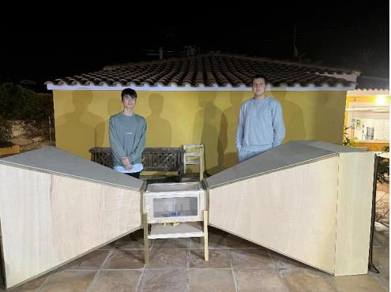
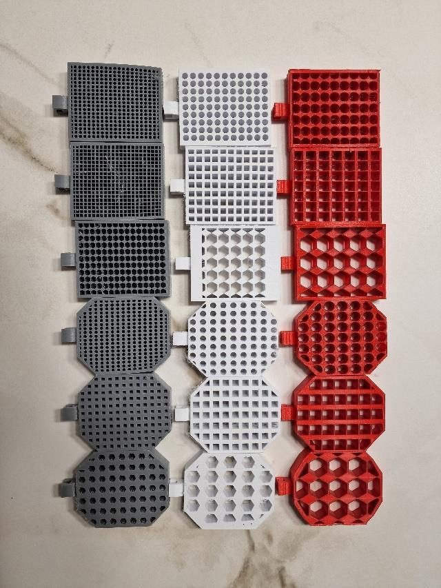
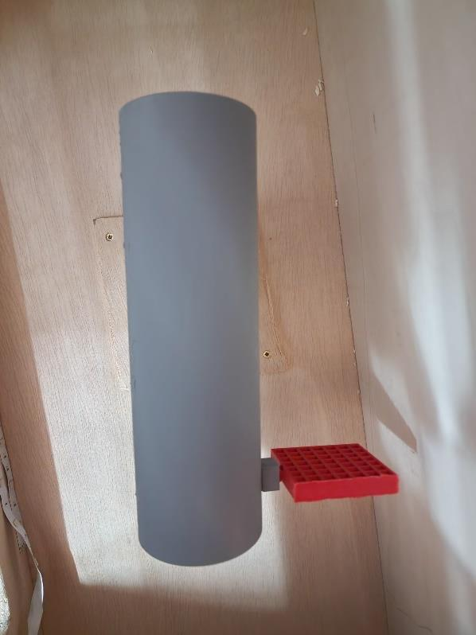
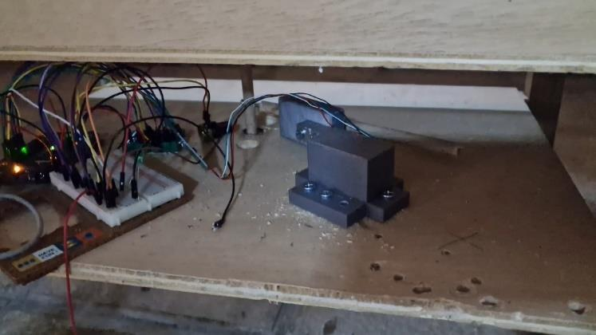
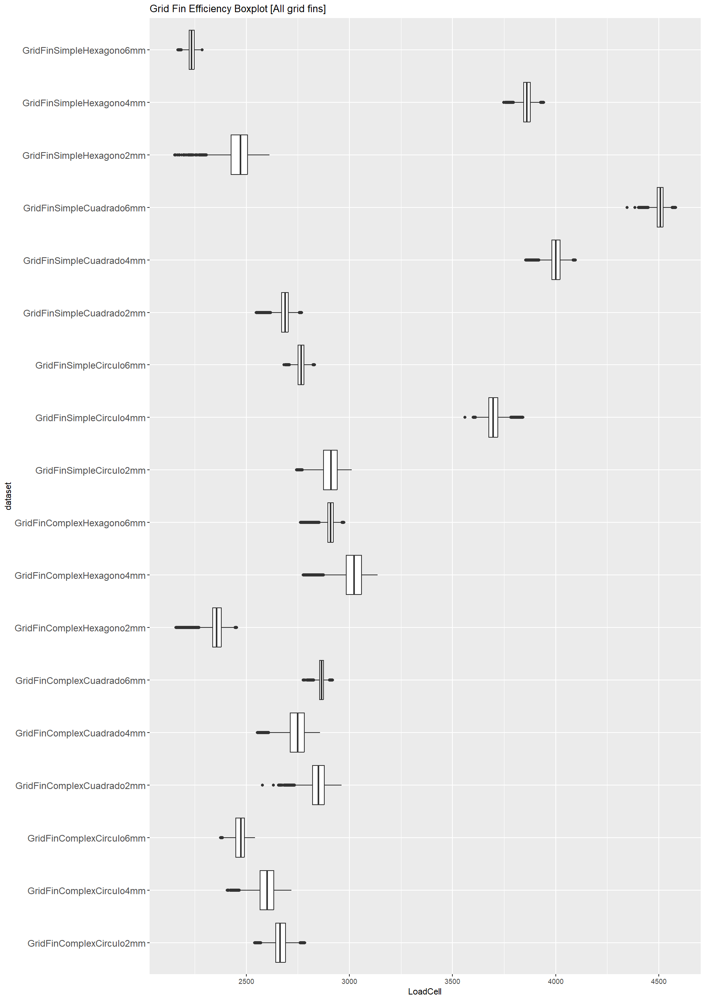

Two outer outlines, three hole shapes, and 2, 4, or 6 mm nominal holes.
Aerodynamics of different control surfaces for orbital booster landing
A model-scale experiment testing how outer outline, hole geometry, and hole size changed the measured load-cell response of 18 3D-printed grid-fin designs.

Brief
Hold the rig constant. Change the geometry.
The team set out to compare grid-fin geometries under a common model-scale airflow. The experiment varied two outer outlines, three hole shapes, and three nominal hole sizes.
Jan Kazimierczak is a named co-author of the three-person report with Tobias Van Bavel and Oscar Canals Estirado. The report documents team-level work and does not assign individual responsibilities.
Experimental system
One physical rig, one controlled design matrix.
- 01
Construct
Build an approximately three-metre wind tunnel with a honeycomb straightener, contraction, 30 cm test section, diffuser, and fan.
- 02
Fabricate
Design in Fusion 360 and 3D print 18 PLA fins: 2 outlines × 3 hole shapes × 3 hole sizes.
- 03
Acquire
Read the TAL-220 load cell through an HX711 and Arduino Uno; use Python to capture serial output as CSV.
- 04
Compare
Use R boxplots, omnibus ANOVA, and Tukey HSD follow-up to examine differences across the tested designs.
Reported result
Geometry changed the measured response.
The report states roughly 10,000 load-cell observations per design—not 180,000 independent trials.
Reported ANOVA result, followed by Tukey HSD comparisons.
The 4 mm version ranked second within the tested matrix.
Physical + analytical evidence
From fabricated variants to one comparative result.
The images below come directly from the final report and keep the test hardware, parameter matrix, and measured output visible.

Eighteen PLA fins span two outlines, three hole shapes, and three nominal hole sizes.

A replaceable grid fin is mounted to the model rocket inside the test section.

The load-cell linkage feeds an HX711 and Arduino before Python writes serial data to CSV.

The report’s combined boxplot places the simple-outline 6 mm square-hole fin highest.
What the evidence supports
A comparative model-scale result—not flight validation.
- The measured variable is reported as load-cell output rather than a calibrated aerodynamic coefficient or validated efficiency measure.
- The observations come from a custom model-scale rig; Reynolds-number scaling alone does not establish full landing-environment equivalence.
- The report does not document independent repeat trials, randomized test order, sensor-calibration uncertainty, or full flow-uniformity validation.
- The strongest next step is to increase the square-hole size gradually and locate the point where the measured response begins to fall.
Primary source
Read the complete 29-page final report.
The report contains the wind-tunnel build, Reynolds-number calculation, all 18 designs, acquisition method, boxplots, statistical analysis, conclusions, and future work.